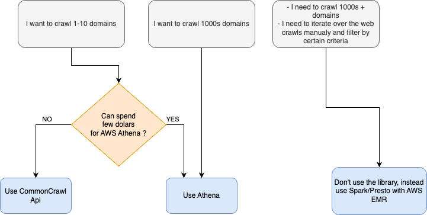

Usage
The library is designed to make interaction with CommonCrawl’s indexes simple, while also providing a framework for extracting data from the downloaded HTMLs.
You can use the library in two ways:
Command Line Interface - This should suffice for 80% of the use cases. Restricted, but easy to use.
How to extract from Common Crawl (practice) - If you need more control over the process, you can use the library programmatically.
Workflow
In order to download from CommonCrawl you first need to find the pointers to the data you want to download. Search for the pointers is done over the specific files called indexes. The indexes don’t contain the data itself, but rather metadata and pointers to the data. We call these pointers domain records (see Domain Record). Once you have the domain records you can download the data from the CommonCrawl’s S3 bucket. Since you might want to extract only specific data from the downloaded HTMLs, you can also specify a list of extractors to be run on the downloaded HTMLs.
The library thus supports the two step workflow:
First download domain records from the indexes.
Download and extract the domain records.
AWS
The CommonCrawl are stored on AWS S3 us-east-1 bucket. The CommonCrawl allows you to access the data using following methods:
Gateway - you can download the data throught CloudFlare HTTP Gateway. You will not need AWS credentials, but it is also the slowest.
S3 - you can download the data directly from S3. You will need AWS credentials, but it is also the fastest.
Additionaly, the CommonCrawl provides two ways to to query the data:
CommonCrawl Index - Free, but more limited and incrdibly slow.
AWS Athena - Paid, but much faster, you can use SQL to query the data.
The library supports all of these methods. We recommend using S3/AWS Athena combination. Refer to the following image to see the differences:
Be nice to others
If you use the library programmatically or through CLI, you will find, that you can specify the number of threads to use. Please be aware that by default we limit the number of requests per thread to 20/s. This is to prevent overloading the CommonCrawl’s servers. If you plan to use more threads, be considerate to others and don’t set the number of threads too high.